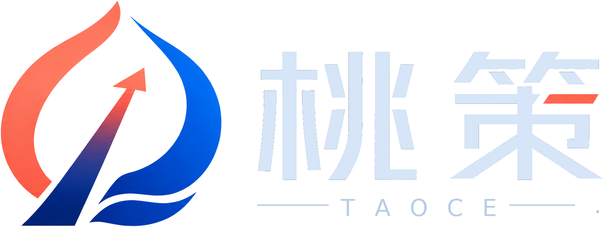

01
AI 应用咨询与方案设计
帮助客户判断 AI 能否解决当前问题，输出需求拆解、功能边界、技术路径、成本估算和最小可行版本计划。
- AI 需求诊断
- PoC 原型规划
- 落地路线图

桃策 TAOCE 专注 AI 应用落地与智能化解决方案。我们不限定行业，不预设产品形态；无论是内容、客服、数据、知识库、办公自动化、业务系统还是 AI 产品原型，都可以先沟通可行性，再根据真实场景拆解为可启动、可交付、可迭代的方案。
桃策以“AI 解决方案工作室”的方式承接真实需求，再根据行业、预算、数据基础和交付周期，组合模型、网页、数据、流程和系统能力。除以下常见方向外，其他 AI 相关需求也可以先沟通可行性。
您不需要一开始就知道自己要做什么产品。可以先描述问题：想提升效率、想做智能客服、想分析数据、想自动生成内容、想把文档变成知识库、想把某个流程自动化，桃策会帮您拆成可执行方案。
帮助客户判断 AI 能否解决当前问题，输出需求拆解、功能边界、技术路径、成本估算和最小可行版本计划。
围绕客服、运营、销售、项目、行政、内容生产等高频流程，设计能执行任务、调用工具、保留人工确认节点的智能体。
将 PDF、Word、Excel、网页、FAQ、产品资料和内部制度整理为可检索、可问答、可持续更新的知识系统。
面向官网文章、产品科普、短视频脚本、社媒文案、邮件触达和客户跟进，搭建稳定的内容生产与发布流程。
基于企业知识、产品资料和销售话术，构建网页、企微、飞书或表单入口的智能咨询与线索收集助手。
把 Excel、表单、业务系统或公开数据整理为指标体系、可视化看板、趋势分析和自动周报/月报。
为初创团队和新品牌搭建高科技感官网、产品/服务介绍页、博客栏目、SEO 结构和客户咨询入口。
根据业务流程开发 AI 工具台、客户管理、内容管理、订单管理、内部协作和行业化轻量系统。
下面不是固定套餐，而是可组合的功能模块。客户只要提出业务目标，桃策可以从这些模块里选择最适合的组合。
以清晰的需求诊断、原型验证、模型接入、系统界面和持续迭代来降低试错成本。官网可以保持高科技质感，但内容表达坚持真实、克制、可交付。
不把业务限制在某一个固定产品里，让客户可以围绕任何 AI 应用场景发起咨询。
根据客户预算、数据基础和周期，判断是做咨询、原型、工具、系统还是长期迭代。
每次交付都沉淀为页面、流程、知识库、数据结构或软件模块，而不是一次性演示。
客户不需要先给出完整技术方案，只要知道自己想降低成本、提升效率、获取线索、分析数据或尝试 AI 产品原型，就可以先沟通。
需要官网、品牌视觉、服务介绍、博客内容、客户线索入口，以及看起来足够专业的第一套线上资产。
想用 AI 改造客服、报价、报表、文档管理、销售跟进、内部协作等高频但重复的流程。
需要稳定生产官网文章、产品知识科普、社媒内容、短视频脚本、邮件文案和客户触达素材。
希望把 Excel、表单和业务数据变成可视化看板、自动分析报告和异常提醒。
先从轻量咨询或原型开始，验证价值后再进入系统开发和长期维护，避免一开始投入过重。
围绕客户常见问题持续更新，帮助官网获得更好的搜索入口和专业信任感。
可以通过商务邮箱、微信直联或需求邮件联系桃策。电话沟通建议先通过微信预约，避免遗漏重要信息。
您可以先写清楚行业、当前流程、已有资料、希望节省的时间或想实现的功能。即使需求还很模糊，也可以先发来初步沟通。